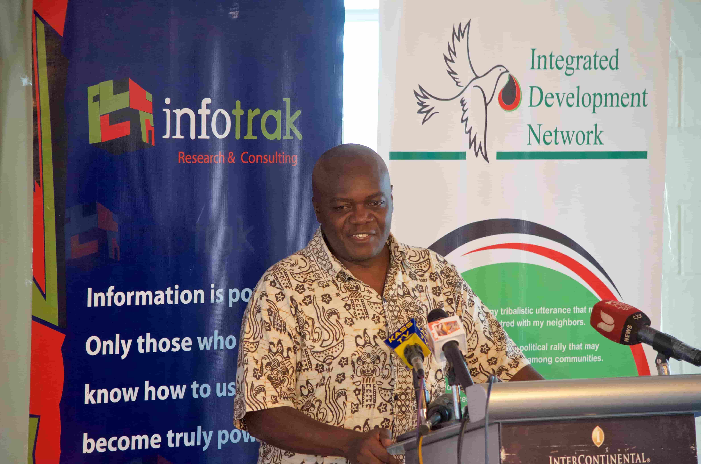
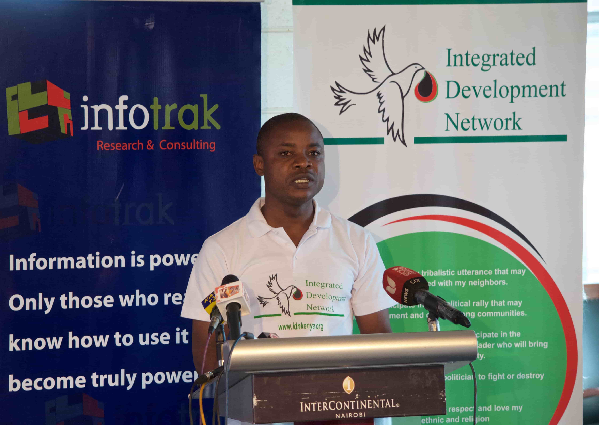

Dr. Carey hold the following: BA (philosophy, history, & literature) & MA (philosophy) - Kenyatta University ;
Ph. D. in (philosophy), University of Vienna, Austria and a Post- Doctoral Fellowship, Institute of African Studies, Columbia University, New York;
He has vast experience in the running and management of NGO’s and heads the IDN-Kenya Advisory Committee.
Wangari Holds a Bachelor of Arts in Economics degree from Masaai Mara University with Professional training in in Accounts (CPA 1 and 2).
She is incharge of IDN-Kenya Programs Committee.

Wendo Holds a Bachelors of Arts in Business Management degree from Maseno University with professional training in System Analysis and Design.
Wendo is in charge of IDN-Kenya Communication and Liaison Committee. .
read more